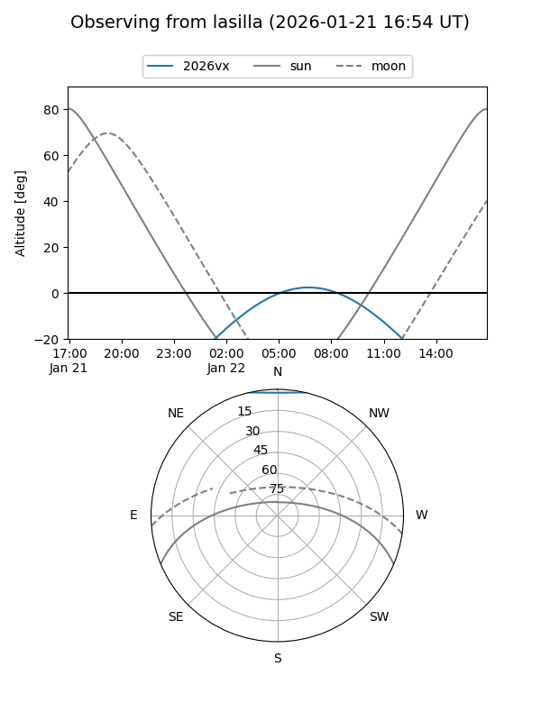
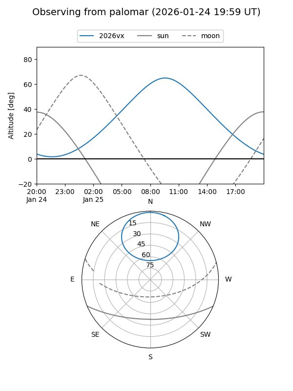
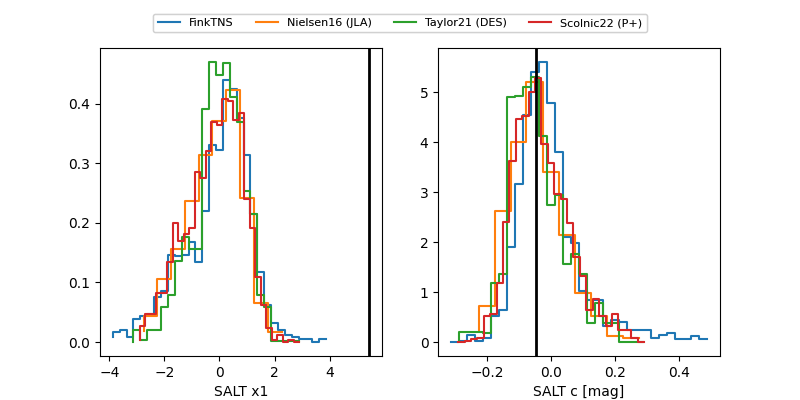

2026vx
Target 2026vx at 2026-01-28 15:31
Aliases and brokers:
FINK: link
Lasair: link
ALeRCE: link
TNS: link
YSE: link
alt names
ZTF26aaajoey (ztf,fink_ztf)
2026vx (tns,yse)
ATLAS26apv (atlas)
PS26gz (panstarrs)
Coordinates:
equatorial (ra, dec) = 151.0142,+58.46870
equatorial (HMS+DMS) = 10:04:03.41,+58:28:07.34
galactic (l, b) = (153.9185,+47.33958)
Flags:
Photometry:
last ztfg=19.50, ztfr=19.18
12 ztfg, 13 ztfr detections
Lightcurve

Visibility


Additional plots
